Oekraïne · Een verhaal in zes scènesУкраїна · Історія у шести сценах
Een land.
Duizenden verhalen.Країна.
Тисячі історій.
Niet alleen wat oorlog verwoest, maar ook wat mensen bewaren.Не лише те, що руйнує війна, а й те, що люди зберігають.
Een visuele reis van het leven in Oekraïne naar de mensen die in Utrecht blijven bouwen aan verbinding.Візуальна подорож від життя в Україні до людей, які в Утрехті продовжують будувати зв’язки.
Deze samengestelde beelden zijn artistieke interpretaties op basis van aangeleverde referenties, geen geverifieerde documentaire archieffoto’s. Controleer feiten, beeldrechten en credits voor publicatie.Ці складені зображення є художніми інтерпретаціями на основі наданих матеріалів, а не перевіреними архівними документальними фото. Перевірте факти, права та авторство перед публікацією.
Het leven dat we kenden
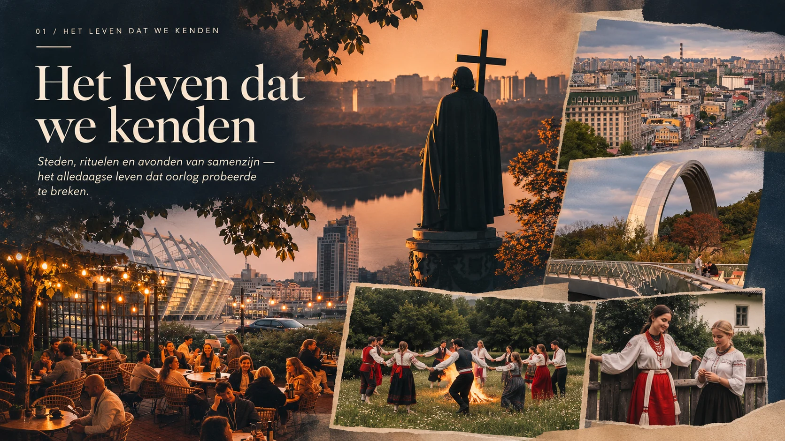
Het leven dat we kendenЖиття, яке ми знали
Een land bestaat uit veel meer dan het nieuws erover. Uit ontmoetingen, plekken en herinneringen.Країна значно більша за новини про неї. Це зустрічі, місця й спогади.
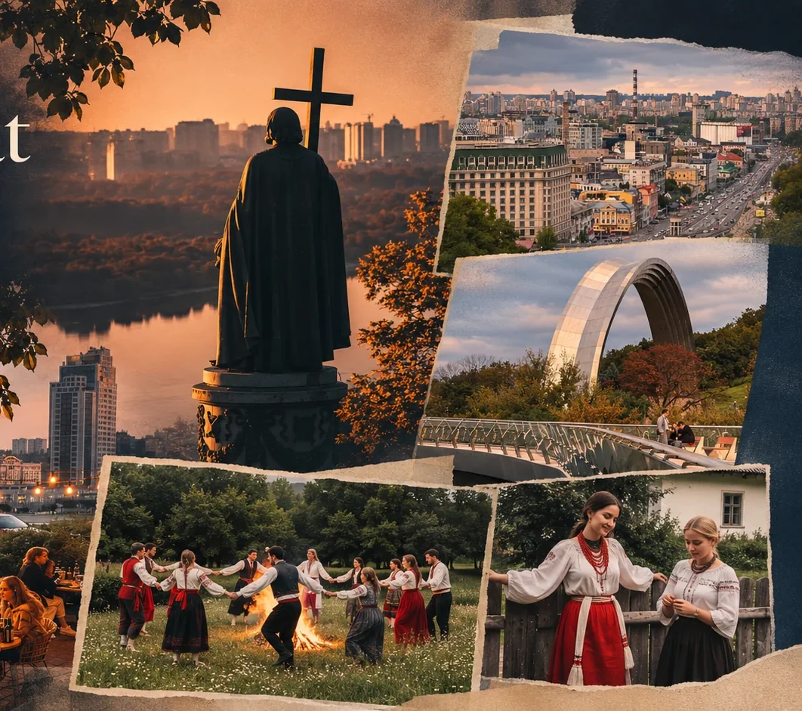
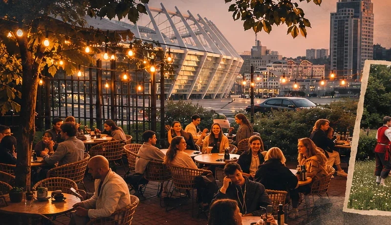
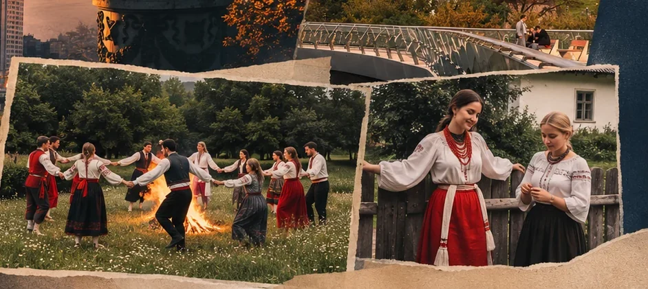
Het eerste breukvlak
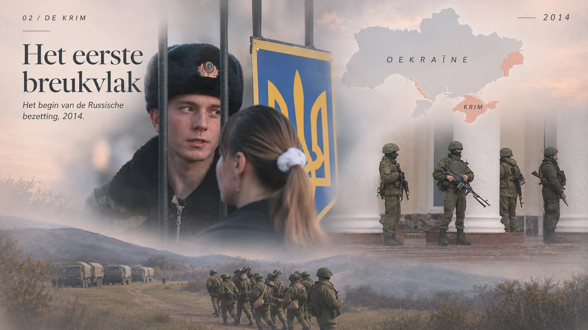
Het eerste breukvlakПерший злам
De oorlog begon niet in 2022. De Russische bezetting van de Krim in 2014 was een eerste grote breuk.Війна почалася не у 2022 році. Російська окупація Криму в 2014 році стала першим великим зламом.
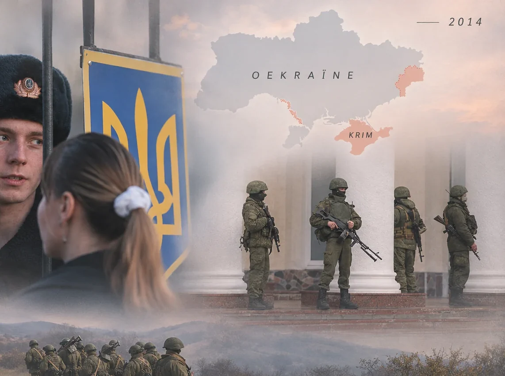
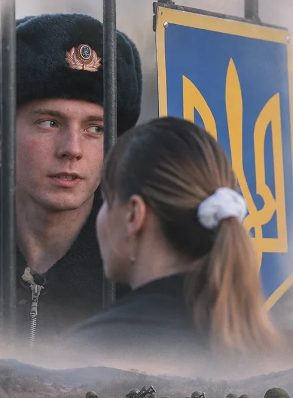
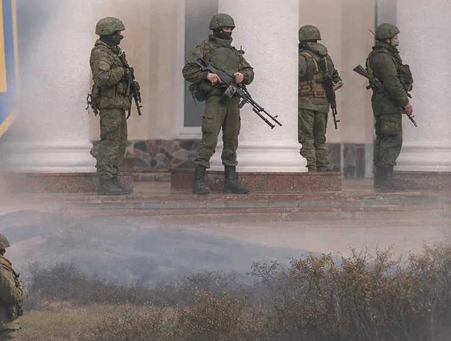
24 februari 2022
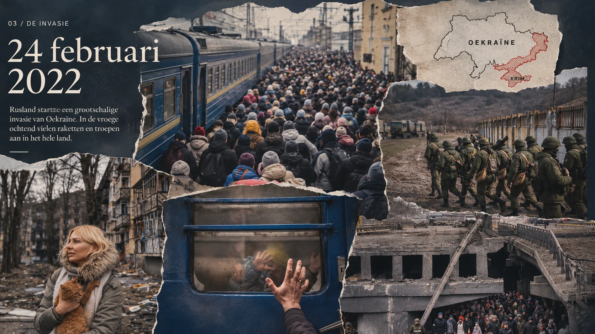
24 februari 202224 лютого 2022
Rusland begon een grootschalige invasie. Voor miljoenen mensen veranderde het dagelijkse leven abrupt.Росія розпочала повномасштабне вторгнення. Для мільйонів людей звичне життя раптово змінилося.
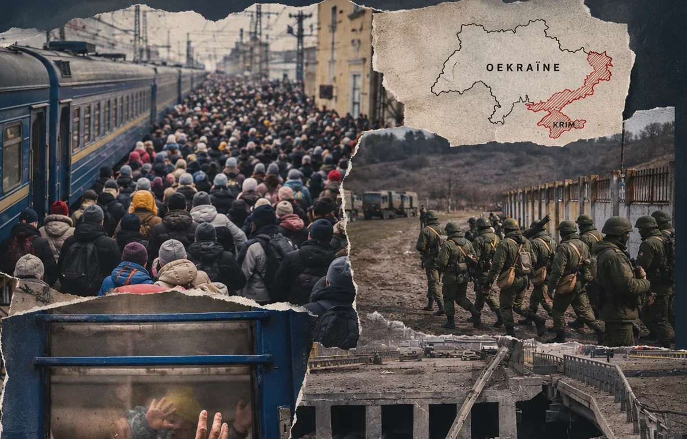
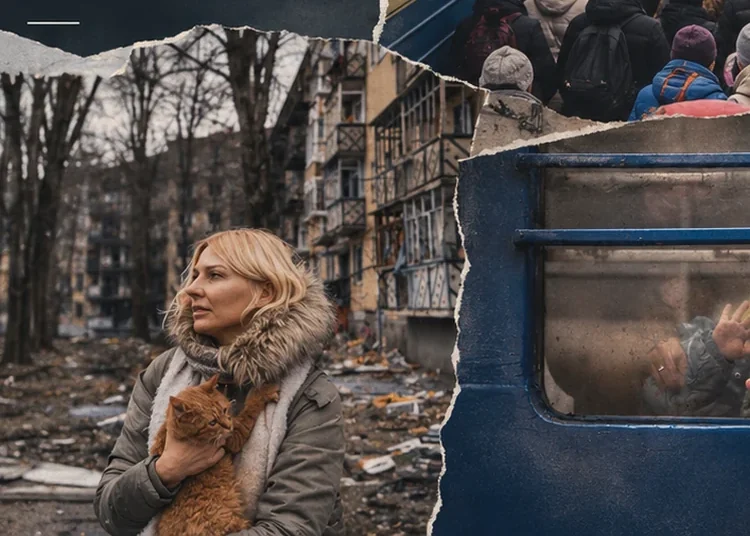
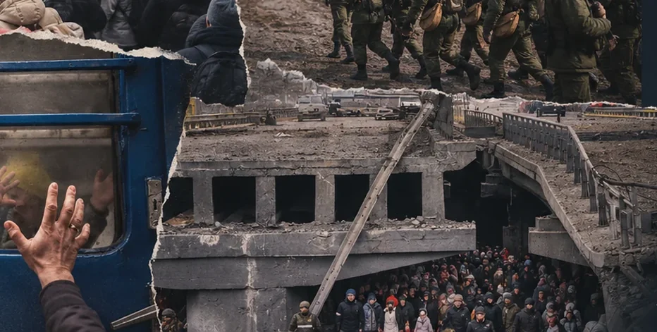
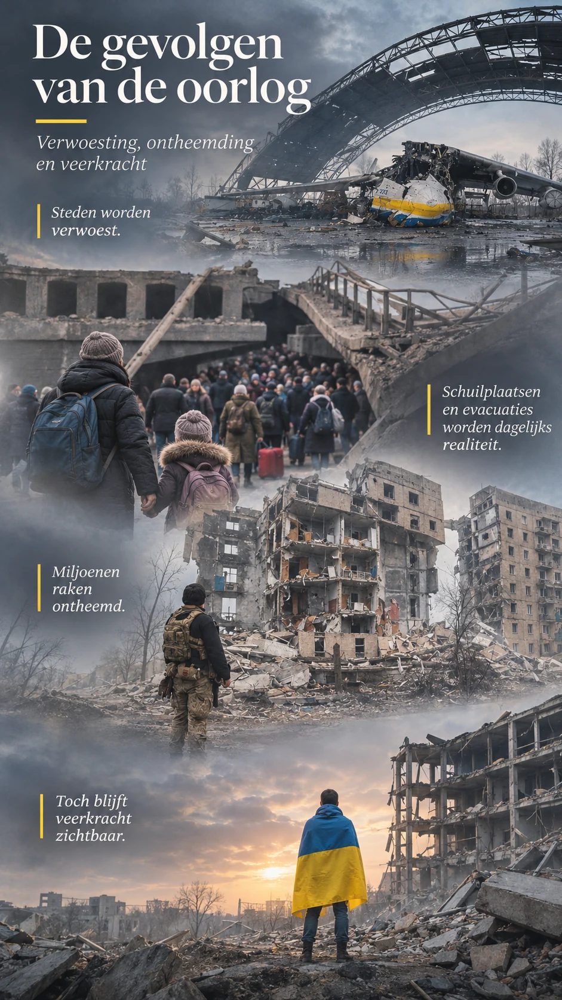
De gevolgen van de oorlogНаслідки війни
Steden en woningen worden beschadigd.Міста й домівки зазнають руйнувань.
Mensen moeten vluchten en afscheid nemen.Люди змушені тікати й прощатися.
De gevolgen duren voort.Наслідки тривають.
Oorlog beschadigt niet alleen gebouwen. Ook verbondenheid, veiligheid en de vertrouwde dagelijkse wereld komen onder druk te staan.Війна руйнує не лише будівлі. Під загрозою опиняються зв’язки між людьми, безпека та звичне повсякденне життя.
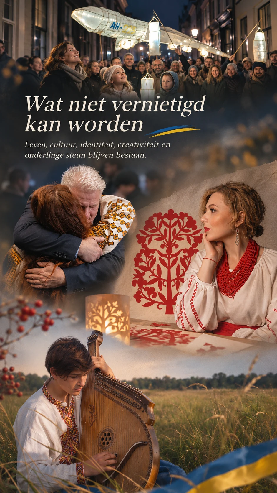
Wat niet vernietigd kan wordenТе, що неможливо знищити
Cultuur wordt doorgegeven.Культуру передають далі.
Mensen vinden elkaar opnieuw.Люди знову знаходять одне одного.
Het leven blijft doorgaan.Життя триває.
Muziek, tradities, creativiteit en onderlinge zorg gaan door. Niet als afsluiting van de oorlog, maar als teken van leven tijdens de oorlog.Музика, традиції, творчість і взаємна підтримка тривають. Не як завершення війни, а як свідчення життя під час неї.
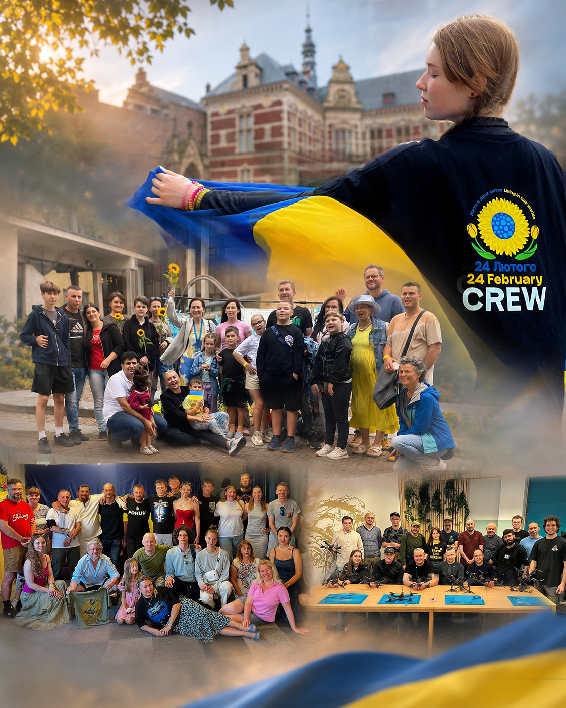
Van Oekraïne naar UtrechtВід України до Утрехта
Een plek om samen te komen.Місце для зустрічей.
Herinneren en elkaar ondersteunen.Пам’ятати й підтримувати одне одного.
Samen het volgende hoofdstuk schrijven.Разом писати наступний розділ.
Bij Vital’nya komen mensen samen om cultuur te delen, elkaar te ondersteunen en nieuwe initiatieven te bouwen. Het verhaal gaat verder.У Vital’nya люди збираються разом, діляться культурою, підтримують одне одного та створюють нові ініціативи. Історія триває.
HET VERHAAL GAAT VERDERІСТОРІЯ ТРИВАЄ
Een tweede thuis ontstaat samen.Другий дім створюють разом.
Vital’nya is een ontmoetingsplek voor en door Oekraïners, samen met Utrechters. Ontdek wat er vandaag gebeurt en hoe je mee kunt doen.Vital’nya — місце зустрічей, створене українцями разом із жителями Утрехта. Дізнайтеся, що відбувається сьогодні та як долучитися.